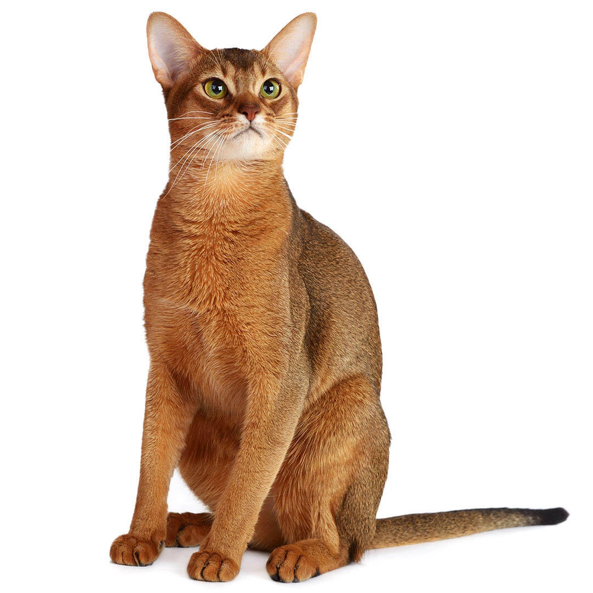

The Abyssinian cat breed is one of the oldest cat breeds, often called the "miniature cougar" of the cat world. Memorable by their unique coat color and expressive almond-shaped eyes [1], [2], [3], [4].
Appearance
At first glance, the Abyssinian cat breed has the appearance of a wildcat, often called a small lion or cougar. The breed's characteristic is its exotic deep orange coat, which is spectacularly warmly ticked, and produces a shimmering iridescence. As well as its large expressive almond-shaped eyes. The breed's coat color is mostly orange, varying in shades, while its eyes are usually golden, but could be even green or hazel. The Abyssinian cat breed has a very athletic physique, with a muscular body, yet slim and long. Another distinctive feature of theirs would be their tiny head with large, wide-set ears. They are considered a medium size cat breed, weighing from 3kg to 5kg.
Personality
The Abyssinian is a loyal, affectionate, outgoing, and active cat breed. They love to spend time with their loved ones and have a friendly nature. Although, they are not fond of strangers. Even though they love companionship, they can be independent, but without regular affection and attention, they are known to suffer from depression. Abyssinians are very curious and intelligent cats, often observing their surroundings and venturing into exploration. They are often in motion, and have high activity levels. Abyssinians are known as an extremely agile and athletic cat breed, usually excellent climbers, hunters, and jumpers. They thrive in environments where they can explore, climb high spaces, or similar. Having a very active nature, they are not known as lap cats or big cuddlers, even though they truly love their family members.
History
The Abyssinian is one of the oldest breeds of domesticated cats, but unfortunately, its real ancestry is lost in time. There are many “tales” about the origin of this exotic cat breed. Romantic tales call the Abyssinian “the cat from the Blue Nile” saying it is a direct descendant of the sacred cat of Ancient Egypt as it resembles the cats depicted in Egyptian murals and artifacts. Others believe that the Abyssinian came to England when British soldiers brought a cat named Zula from Abyssinia (now Ethiopia) at the end of the Abyssinian War in 1868. Although, the most recent genetic research suggests the breed originated in Southeast Asia. It is truly unfortunate that the true history and ancestry of this cat breed is unknown. The Abyssinian cat breed was first recognized by England's Governing Council of the Cat Fancy in 1929. Today, the breed is recognized by many associations, including “Savez felinoloških društava Hrvatske” (SFDH), the Cat Fanciers' Association (CFA), and The International Cat Association (TICA) [1], [2], [3], [4].